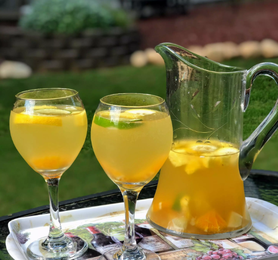

Sangria

Description
Easy sangria recipe that can be easily altered based on fruit you have on hand and personal taste.
Ingredients
- 2 (750 milliliter) bottles Sauvignon Blanc
- 2 cups pineapple juice
- 1 cup triple sec
- ½ cup brandy
- ½ cup chopped fresh pineapple
- ½ cup chopped orange
- 1 lemon, seeded and chopped
- ¼ cup chopped lime
- 2 cups lemon-lime flavored carbonated beverage (such as 7-Up®)
Directions
- Mix Sauvignon Blanc, pineapple juice, triple sec, and brandy together in a large pitcher. Add chopped pineapple, orange, lemon, and lime. Cover and refrigerate, 8 hours to overnight.
- Stir in lemon-lime soda before serving.
Nutrition Facts
Per Serving: 383 calories; protein 0.8g; carbohydrates 38.5g; fat 0.3g; sodium 26mg.